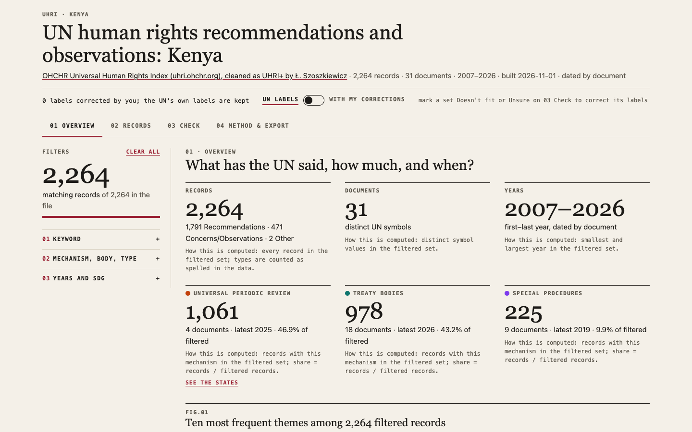
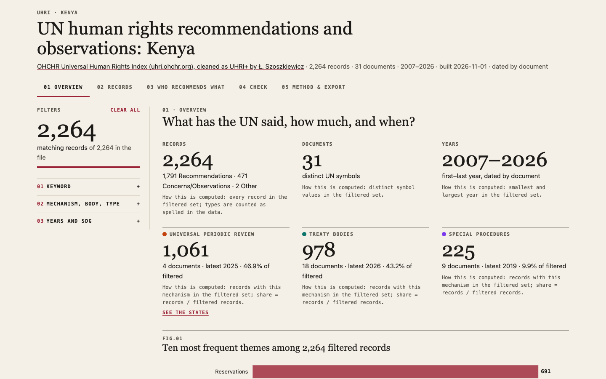

Run 2026-11-04-dashboard-chain. Country: Kenya. Click a screenshot to open the app.
| Claude Sonnet 5.5 · USA · Amazon Bedrock | |
|---|---|
| s7-3-check-ten |  5/5 · None s · $0.000 · 1216 lines all checks passed |
| s7-2-who-recommends |  7/7 · None s · $0.000 · 1094 lines all checks passed |